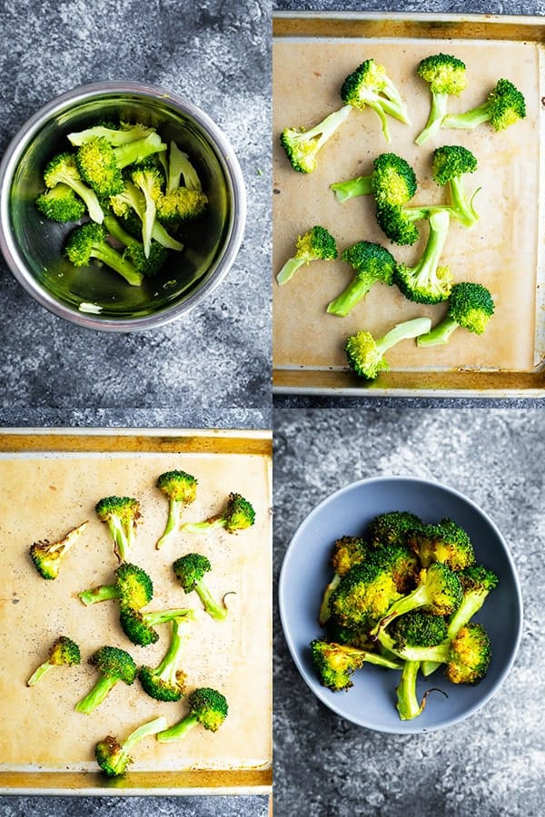

Broccoli Recipe | Ultimate Meal Prep Guide
Recipe is online by Denise Bustard Approx Time: 15 Minutes Method: Boil

What you'll be needing
- Knife & Board
- Pot - to boil the broccoli
- Olive Oil
- Bowl - To wash the broccoli in
Step by Step Guide on what to do next
- Start boiling the water, add a little olive oil into the water
while we wait for the water to boil, we can head over and prep the broccoli
- Wash the Broccoli to desire
- Cut the broccoli into stems (look image above for reference)
- Once water is boiling, throw the broccoli in
- WATCH until broccoli is healthy green, then pour boiling water (be safe)
Enjoy! Broccoli is my favorite